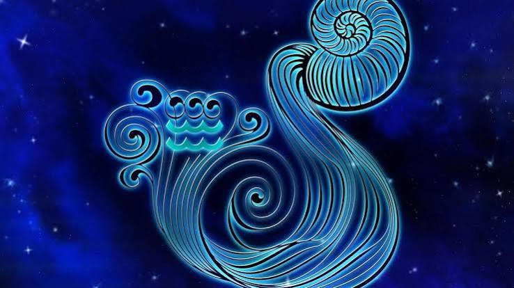

Пошук нових відчуттів — одне з улюблених занять представників цього знака Зодіаку. Він є досить суперечливим, складним. Народжені під цим сузір'ям мають невгамовним прагненням до свободи, при цьому в спілкуванні вони зазвичай м'які, добрі, доброзичливі. Може здатися, що такі люди не впевнені в собі, але це не так. Вони люблять філософствувати, пізнавати таємниці людського існування, буття, маючи свою точку зору на це.